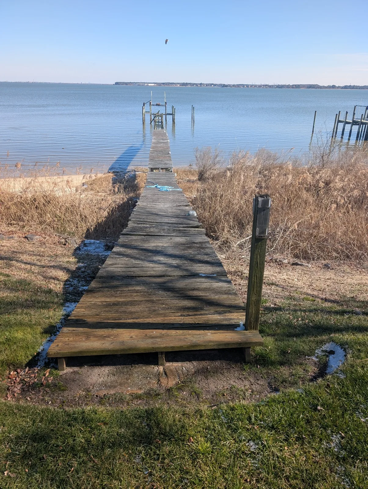

Initial Conversation
Tell us what you’re seeing and what you want the pier to feel like when the work is done.

Built for Life on the Water
Pier and dock repair, rebuilding, and re-decking in Suffolk, Virginia Beach, and throughout Hampton Roads — Built for Life on the Water.
Focused waterfront craftsmanship
Stewart Bradley Pier Services helps homeowners in Suffolk, Virginia Beach, Chesapeake, and throughout Hampton Roads get more life out of the pier or dock they already have. Pier repair in Suffolk, VA and dock repair in Virginia Beach means restoring the structure in the water, not starting over.
Our focus is the full above-water job: rebuild and re-deck, framing, selective repairs, pressure washing, staining, traditional or rope rails, and pier lighting coordinated with a licensed electrician where required. Assessments stay visual and above water.
Built for Life on the Water is our standard for materials, craftsmanship, and communication. Land-side renovations and general contracting are handled by Stewart Bradley Companies.
The above-water builder for piers and docks on existing pilings: rebuild the walkway or replace worn decking, with materials suited for waterfront exposure.
02Pier repair in Suffolk, VA and dock repair in Virginia Beach on existing structures: replace failed boards and accessible framing when a complete rebuild isn’t needed.
03Seal and protect sound pier wood against sun, moisture, and salt with high-performance stains suited to Hampton Roads waterfront conditions.
04Install or replace traditional and rope rail systems on existing piers, with durable posts, clean alignment, and careful finishing.
05Remove algae, dirt, and weathering with careful cleaning suited to pier surfaces—ideal for seasonal upkeep and restoring appearance.
06Start with an honest visual look at accessible, above-water areas and a clear estimate before you decide how to proceed.
Schedule an assessment → 07Add practical, weather-resistant lighting to existing residential piers and docks for safer access and better use after dark. Stewart Bradley Pier Services coordinates lighting with the surrounding pier work; electrical wiring and connections are performed by a licensed electrician where required.
Featured transformation
This aging Hampton Roads pier received renewed framing where needed, new decking and a two-course rope railing—creating a clean, usable waterfront walkway ready to be enjoyed again.


Project scope


Built for Life on the Water
Tell us what you’re seeing and what you want the pier to feel like when the work is done.
We review accessible above-water areas and talk through practical options. This is a visual assessment, not an engineering or underwater piling inspection.
You get a clear written scope and materials before work begins—what the pier needs, not a larger job sold for its own sake.
We complete the agreed repairs, re-decking, or rebuilding on existing pilings with careful workmanship and respect for the property.
Realistic expectations and direct updates from start to finish.
Pier care
Sun, salt, moisture and changing tides are hard on waterfront structures. These quick guides help homeowners recognize common warning signs and make informed maintenance decisions.
Loose boards, raised fasteners, soft spots, movement and uneven framing are all reasons to schedule a closer look.
Cleaning restores appearance; a suitable finish can help slow weathering and moisture absorption.
The right choice depends on the condition of the decking, framing, pilings and connections—not age alone. Many piers need selective repairs or a re-deck. When the deck and framing are gone but the piles remain, we rebuild the pier or dock on those existing pilings.
Local service
Based in Suffolk, Stewart Bradley Pier Services repairs and restores existing residential piers and docks in Suffolk, Smithfield, Isle of Wight, Chesapeake, Portsmouth, Norfolk, Virginia Beach, Hampton, Newport News, York County, Poquoson, and surrounding communities. We handle framing, selective repairs, re-decking and rebuilding on existing pilings, washing, staining, rails, and lighting coordinated with a licensed electrician where required. Project availability depends on location, access, and scope.

Ready to restore your pier?
Choose a convenient time for a free consultation. We can discuss what you are seeing, answer initial questions and determine the best next step.
Schedule a Free Pier ConsultationNot Ready To Schedule?
Send a few details below and we will follow up, typically the same business day.